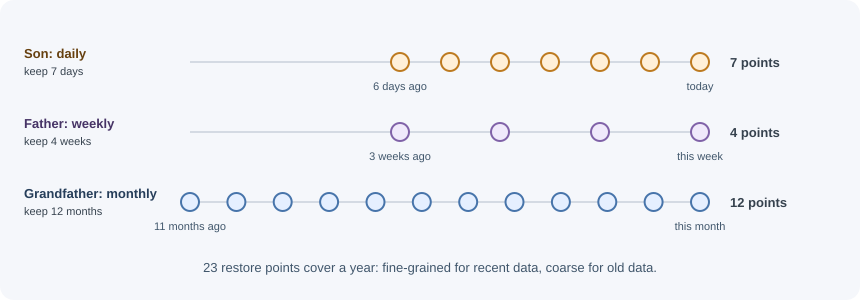

Backup Fundamentals and Strategies¶
A backup strategy answers four questions: what to copy, how often, where to keep the copies, and for how long, so that you can restore within the time and data loss the business accepts. This lesson separates backups from replication and snapshots, compares full, incremental, and differential backups with a storage and restore-time example, explains the 3-2-1 rule and its 3-2-1-1-0 extension, immutable backups against ransomware, encryption and key management, grandfather-father-son retention, and what besides the database needs backing up.
Why it matters¶
Most data loss is not caused by disks dying, which redundancy handles well. It is caused by people and software: a migration that drops the wrong field, a script run against production instead of staging, a bug that overwrites records for a week before anyone notices, an attacker who encrypts or deletes everything they can reach. Redundant systems copy these mistakes faithfully and immediately. Only an independent copy from before the mistake lets you recover.
Strategy matters because backups are easy to get superficially right and deeply wrong: copies in the same account an attacker controls, an incremental chain too long to restore in time, encrypted backups whose key was deleted, or a job that has quietly produced empty files for months. GitLab's 2017 outage is the classic example of several backup mechanisms all failing at once.
Real-world usage¶
- GitLab (2017). The
postmortem of the January 31 database outage
describes how an engineer accidentally removed the primary database's
data directory, and how the regular
pg_dumpbackups had been failing silently (a version mismatch, with failure emails rejected), disk snapshots were not enabled for the database servers, and replication could not help. GitLab restored from a snapshot taken about six hours earlier for staging, losing database records created in that window. - Google SRE book. The chapter Data Integrity: What You Read Is What You Wrote argues that what users need is restores, not backups, and describes defence in depth: soft deletion, backups with tested recovery, and replication, each covering different failure modes.
- CISA ransomware guidance. The #StopRansomware Guide recommends offline, encrypted backups of critical data, regular testing of backup integrity and restore procedures, golden images, and keeping infrastructure-as-code templates backed up offline, because attackers look for and destroy reachable backups.
- The 3-2-1 rule. US-CERT's paper Data Backup Options states the rule: keep 3 copies of important data (1 primary and 2 backups), on 2 different media types, with 1 copy offsite.
Popular tools and providers: AWS Backup, Azure Backup, Google Cloud Backup and DR, MongoDB Atlas backups, Percona Backup for MongoDB, pgBackRest, Barman, restic, BorgBackup, Velero (Kubernetes), rclone, and Veeam.
How it works¶
Backups, replication, and snapshots¶
| Backup | Replication | Snapshot | |
|---|---|---|---|
| What it is | An independent copy from a point in time, kept for a retention period | A continuously updated copy (replica set member, read replica, cross-region bucket replication) | A point-in-time image of a volume or database, often copy-on-write |
| Protects against | Deletion, corruption, bad deploys, ransomware (if isolated), disasters (if offsite) | Hardware and zone failures; enables fast failover | Quick rollback after a risky change; base for backups |
| Does not protect against | Data written after the last backup | Mistakes and attacks, which it copies within seconds | Loss of the storage system or account that holds it, unless copied elsewhere |
| Typical RPO | Hours (or minutes with log capture) | Seconds or zero | At snapshot time |
| Restore speed | Minutes to hours | Seconds (failover) | Fast within the same system |
Replication is about availability; backups are about recoverability.
TaskFlow needs both: a MongoDB replica set to survive a node failure, and
backups to survive db.tasks.deleteMany({}). A snapshot becomes a backup
once it is copied somewhere independent, with its own retention.
Full, incremental, and differential backups¶
- A full backup copies everything.
- An incremental backup copies what changed since the previous backup of any kind.
- A differential backup copies what changed since the last full backup.
![Diagram: for 500 GB of data with 25 GB of new changes per day. Daily full backups store 500 GB each day, 3,500 GB a week, and restoring Saturday needs one piece, Saturday's full. Incremental backups store a 500 GB full on Sunday then 25 GB each day, 650 GB a week, and restoring Saturday needs seven pieces: Sunday's full plus six incrementals. Differential backups store Sunday's full then 25, 50, 75, 100, 125, and 150 GB, 1,025 GB a week, and restoring Saturday needs two pieces: Sunday's full plus Saturday's differential.](../full-incremental-differential.svg)
Worked example: 500 GB of data, 25 GB (5%) of new changes each day, assuming each day changes different data, one week of backups:
Daily fulls: 7 x 500 GB = 3,500 GB
Incremental: 500 + 6 x 25 GB = 650 GB
Differential: 500 + (25 + 50 + 75 + 100 + 125 + 150) GB = 1,025 GB
Restore Saturday's state, at 200 MB/s from backup storage:
Daily fulls: read 500 GB = 2,500 s, about 42 min (1 piece)
Incremental: read 500 + 150 GB = 650 GB = 3,250 s, about 54 min (7 pieces, in order)
Differential: read 500 + 150 GB = 650 GB = 3,250 s, about 54 min (2 pieces)
The incremental and differential restores read the same amount of data here, but the incremental restore depends on seven pieces applied in order, so any missing or corrupt piece breaks everything after it, and real chains are often weeks long. Differentials grow every day until the next full.
Modern tools blur these categories:
- Block-level and deduplicating backups (restic, BorgBackup, cloud snapshots, Percona Backup and pgBackRest incrementals) store only new or changed chunks, but each snapshot can be restored as if it were a full.
- Synthetic fulls build a new full backup from the previous full and its incrementals on the backup server, so the chain stays short without re-reading production.
- Continuous log capture (MongoDB oplog, PostgreSQL WAL) records every change between base backups, enabling point-in-time recovery, covered in database backups and point-in-time recovery.
The 3-2-1 rule and 3-2-1-1-0¶
![Diagram: region A, production account, holds copy 1, the production MongoDB replica set on SSD volumes serving live traffic, and copy 2, a local backup of daily snapshots in object storage for fast restores. Copy 2 is copied to region B, a separate backup account, as copy 3: an offsite backup in another region and account, immutable through Object Lock and encrypted with its own KMS key. A mistake, ransomware, or stolen admin keys can reach copies 1 and 2; copy 3 survives with separate credentials and no early deletion. Chips summarize 3 copies, 2 storage types, 1 offsite (the 3-2-1 rule) and +1 immutable, +0 restore errors (the 3-2-1-1-0 extension).](../three-two-one-rule.svg)
3-2-1: keep 3 copies of the data (production plus 2 backups), on 2 different types of storage, with 1 copy offsite. Each part defends against a different failure: multiple copies against loss of one, different media against a flaw shared by one storage type, offsite against losing a site.
In the cloud, "different media" and "offsite" translate to different services, regions, and, most importantly, different accounts and credentials: a copy that the same administrator credentials can delete is not independent.
3-2-1-1-0 extends the rule for the ransomware era:
- +1 immutable or offline copy that cannot be modified or deleted during its retention period, even by an administrator.
- 0 errors: backups are verified by automated restore tests, not assumed (see restore testing and runbooks).
Immutable backups against ransomware¶
Attackers who gain administrator access look for backups first, because destroying them makes a ransom far more likely to be paid. Defences:
- Write once, read many (WORM) storage. Amazon S3 Object Lock stores object versions that cannot be deleted or overwritten until a retention date passes. In compliance mode nobody, including the root account, can shorten the retention or delete the version; in governance mode users with a special permission can. A legal hold blocks deletion with no end date until it is removed. Object Lock requires versioning.
- Backup vault locks. AWS Backup Vault Lock, Azure immutable vaults, and similar features enforce minimum retention on backup vaults.
- Separate accounts and credentials. Backups are copied into an account where production roles cannot delete anything; the backup writer role can write but not delete.
- Retention longer than detection time. Attackers can sit in a network for weeks before encrypting; if backups expire after 7 days, every copy may already contain their changes or tooling. Keep at least some copies for months.
- Offline copies for the most critical data: storage not reachable from the network at all.
Immutability has costs: you cannot delete data early (including data you are legally required to erase), and mistakes in retention settings are expensive. Use compliance mode deliberately, with short default retention and longer retention only where needed.
Encryption and key management¶
Backups contain everything sensitive in production, often for longer, so:
- Encrypt at rest with server-side encryption (for example SSE-KMS) or client-side encryption before upload (restic, BorgBackup, and age encrypt by default or on request), and in transit with TLS.
- Keep keys separate from the backups. A KMS key in the backup account, or a client-side key stored in a different system, so stealing the backups alone is useless.
- Protect the keys as carefully as the data. If the key is deleted or lost, the backups are permanently unreadable. Cloud KMS keys have a deletion waiting period (7 to 30 days in AWS KMS) precisely so mistakes can be cancelled; alert on scheduled key deletions.
- Restrict who can restore. A restore role can read all historical data; grant it narrowly and audit its use.
- Crypto-shredding: encrypting each tenant's data with its own key lets you make that tenant's data in old backups unreadable by destroying the key, which helps with deletion obligations.
Retention schedules: grandfather-father-son¶

Keeping every daily backup forever is expensive and rarely useful. Grandfather-father-son (GFS) keeps:
- Sons: daily backups for 7 to 14 days (recover yesterday's mistake).
- Fathers: one weekly backup for 4 to 5 weeks.
- Grandfathers: one monthly backup for 12 months or more, sometimes yearly backups for several years.
23 restore points cover a year instead of 365. Retention is driven by three inputs: how far back mistakes are typically discovered (silent corruption can take weeks to notice), legal and contractual requirements, and cost. Personal data adds a constraint the other way: privacy laws such as the GDPR limit how long you keep it, so document how deletion requests interact with backups (usually: deleted data expires with the backups and is never restored into production).
What to back up beyond the database¶
| Data | Why | How for TaskFlow |
|---|---|---|
| MongoDB data | The system of record | Snapshots plus continuous oplog, or Atlas Cloud Backup with point-in-time restore |
| Object storage (uploaded attachments) | Users' files; replication alone copies deletions | Versioning, Object Lock or backup copies to another account, lifecycle rules |
| Secrets and keys | Without them, restored systems cannot start or decrypt data | Secrets manager replication or export to a separate, encrypted store; KMS key protection |
| Configuration | Feature flags, tenant settings, DNS zones | Keep in Git or IaC; export what lives in SaaS consoles |
| Infrastructure-as-code state | Terraform state maps code to real resources; losing it makes changes dangerous | Remote state in a versioned, access-controlled bucket |
| Source code and CI configuration | Rebuilding requires code and pipelines | Hosted Git plus a mirror elsewhere; Git hosting is not itself a backup |
| Container images and build artifacts | Redeploying an exact old version | Registry replication or rebuild from tagged source |
| Logs and audit trails | Investigations and compliance | Retention in the log store and archive tier |
| Runbooks and contact lists | Needed when your systems are down | Offline or independently hosted copies |
Not everything needs a backup: caches (Redis used as a cache), search indexes, and derived tables can be rebuilt from the source, as long as the rebuild procedure is documented and its duration fits the RTO. Write down, for every data store, whether it is restored or rebuilt.
When to use and when not to use¶
| Situation | Strategy |
|---|---|
| Small database (under tens of GB) | Nightly logical dumps plus continuous log capture, copied offsite |
| Large database (hundreds of GB and more) | Storage or database-native snapshots with incremental change capture; logical dumps only for subsets |
| Managed database (Atlas, RDS) | Enable its backups and point-in-time recovery, plus cross-region or cross-account copies you control |
| Files in object storage | Versioning plus a copy in another account, ideally with Object Lock |
| Critical data, ransomware risk | 3-2-1-1-0: separate account, immutable copy, tested restores |
| Data you can regenerate | Document the rebuild instead of backing it up |
| Personal data with deletion obligations | Short retention, encryption, documented deletion handling; avoid indefinite immutability |
Do not treat a replica, RAID array, or same-account snapshot as your only protection, and do not add backup layers you never test.
Practical examples¶
A backup inventory for TaskFlow¶
| What | Method | Frequency | Retention | Where | Restore test |
|---|---|---|---|---|---|
MongoDB taskflow |
Atlas Cloud Backup snapshots + continuous backup | Snapshots every 6 h, continuous oplog | 7 d PITR, 4 w weekly, 12 m monthly | Primary region + copy to second region | Weekly automated restore to scratch cluster |
| Uploads bucket | Versioning + replication to backup account with Object Lock | Continuous | 35 d locked, about 430 d total (400 d + 30 d for old versions) | Backup account, second region | Monthly sample restore of 100 files |
| Terraform state | Versioned S3 backend | Every apply | 90 d of versions | Infrastructure account | Quarterly terraform plan from a restored version |
| Secrets | Secrets manager replica | Continuous | Managed | Second region | Quarterly DR drill |
| Runbooks | Markdown in Git + exported copy | On change | All versions | Git mirror, offline copy | Reviewed in DR drill |
The inventory itself is a deliverable: it is what you check during a disaster, so keep a copy outside the systems it describes.
File backups with restic and GFS retention¶
#!/usr/bin/env bash
# scripts/backup-uploads.sh: encrypted, deduplicated backup of local uploads to S3
set -euo pipefail
export RESTIC_REPOSITORY="s3:s3.amazonaws.com/taskflow-backups-example/uploads"
export RESTIC_PASSWORD_FILE="/etc/taskflow/credentials/restic-password" # root-only 0600, not in the repository
# AWS credentials come from the instance role or standard AWS environment variables.
# One-time setup: restic init
restic backup /srv/taskflow/shared/uploads --tag uploads --host taskflow-files-1
# Grandfather-father-son retention, then remove unreferenced data
restic forget --tag uploads --keep-daily 7 --keep-weekly 4 --keep-monthly 12 --prune
# Verify repository structure and read back a sample of the stored data
restic check --read-data-subset=5%
restic encrypts and deduplicates on the client, so the bucket owner
cannot read the data without the password, and each snapshot restores as
a full even though only changed chunks are uploaded. Losing
/etc/taskflow/credentials/restic-password makes every backup unreadable,
so store it in a secrets manager as well. The paths follow the server
layout in
setting up a production server.
An immutable, encrypted backup bucket (Terraform)¶
# infra/backup-bucket.tf (applied in the separate backup account)
resource "aws_kms_key" "backups" {
description = "TaskFlow backup encryption"
deletion_window_in_days = 30
enable_key_rotation = true
}
resource "aws_s3_bucket" "backups" {
bucket = "taskflow-backups-example"
object_lock_enabled = true
}
resource "aws_s3_bucket_versioning" "backups" {
bucket = aws_s3_bucket.backups.id
versioning_configuration {
status = "Enabled"
}
}
resource "aws_s3_bucket_object_lock_configuration" "backups" {
bucket = aws_s3_bucket.backups.id
rule {
default_retention {
mode = "COMPLIANCE" # nobody can delete a version before 35 days, not even root
days = 35
}
}
}
resource "aws_s3_bucket_server_side_encryption_configuration" "backups" {
bucket = aws_s3_bucket.backups.id
rule {
apply_server_side_encryption_by_default {
sse_algorithm = "aws:kms"
kms_master_key_id = aws_kms_key.backups.arn
}
bucket_key_enabled = true
}
}
resource "aws_s3_bucket_lifecycle_configuration" "backups" {
bucket = aws_s3_bucket.backups.id
rule {
id = "expire-old-backups"
status = "Enabled"
filter {}
expiration {
days = 400
}
noncurrent_version_expiration {
noncurrent_days = 30
}
}
}
resource "aws_s3_bucket_public_access_block" "backups" {
bucket = aws_s3_bucket.backups.id
block_public_acls = true
block_public_policy = true
ignore_public_acls = true
restrict_public_buckets = true
}
Object Lock retention protects each version for 35 days; lifecycle rules expire objects after that, so storage does not grow forever. Pair the bucket with a policy that lets production's backup role write but not delete, and test the setup with a short retention period first, because compliance-mode retention cannot be undone.
A backup plan with cross-region copies and a vault lock (AWS Backup)¶
# infra/backup-plan.tf
resource "aws_backup_vault" "primary" {
name = "taskflow-primary"
kms_key_arn = aws_kms_key.backups.arn
}
resource "aws_backup_vault_lock_configuration" "primary" {
backup_vault_name = aws_backup_vault.primary.name
min_retention_days = 7
max_retention_days = 400
changeable_for_days = 3 # after 3 days the lock can no longer be changed or removed
}
resource "aws_backup_plan" "taskflow" {
name = "taskflow"
rule {
rule_name = "daily"
target_vault_name = aws_backup_vault.primary.name
schedule = "cron(0 3 * * ? *)" # 03:00 UTC every day
lifecycle {
delete_after = 14
}
copy_action {
destination_vault_arn = var.dr_vault_arn # vault in another region and account
lifecycle {
delete_after = 14
}
}
}
rule {
rule_name = "monthly"
target_vault_name = aws_backup_vault.primary.name
schedule = "cron(0 4 1 * ? *)" # 04:00 UTC on the 1st of each month
lifecycle {
delete_after = 365
}
copy_action {
destination_vault_arn = var.dr_vault_arn
lifecycle {
delete_after = 365
}
}
}
}
A backup selection (aws_backup_selection) then assigns resources, for
example by tag, to the plan. Setting changeable_for_days puts the vault
lock in compliance mode after the grace period.
Best practices¶
- Start from RPO and RTO for each data store, then choose methods that meet them.
- Never rely on replication, RAID, or same-account snapshots alone.
- Follow 3-2-1-1-0: an offsite copy in a separate account, at least one immutable copy, and zero untested backups.
- Encrypt backups, keep keys separate, and protect keys from deletion.
- Use GFS retention driven by detection time, legal needs, and cost.
- Back up object storage, secrets, configuration, IaC state, and runbooks, not just databases; document what is rebuilt instead.
- Alert on backup job failures, on the age of the last successful backup, and on unexpected size changes.
- Keep restore chains short (periodic or synthetic fulls).
- Keep an inventory of every backup, with owner and restore test status.
In production¶
- Backups have been empty for weeks and nobody noticed.
Detect: backup sizes dropped sharply, or a restore test fails; the job
"succeeded" every night. Cause: the script ignores the dump tool's exit
code, or a version mismatch or permission error produces an empty file
(as at GitLab). Fix:
set -euo pipefail, check exit codes, alert on size anomalies and on the age of the last verified backup, and run automated restore tests. - Ransomware encrypted production and deleted the backups. Detect: backup vaults or buckets are empty, or deletion events from a production role appear in the audit log. Cause: backups lived in the same account with credentials the attacker obtained. Fix: copies in a separate account, Object Lock or vault lock in compliance mode, and backup writer roles without delete permissions.
- A restore takes two days instead of two hours. Detect: a DR drill or real restore stalls while applying a long chain of incrementals or downloading from cold storage. Cause: months since the last full, or backups moved to an archive tier with slow retrieval. Fix: periodic or synthetic fulls, keep recent restore points in a fast tier, and measure restore time in drills.
- Backups cannot be decrypted. Detect: restore fails with access denied or key errors. Cause: the KMS key was disabled or scheduled for deletion, or a client-side password was lost with the server. Fix: key policies that restrict deletion, alerts on key deletion scheduling, and key material or passwords stored independently of the backups.
- The database restores, but files referenced by tasks are missing. Detect: restored tasks link to attachments that return 404. Cause: the uploads bucket was not backed up, or only replicated, so deletions propagated. Fix: versioning and separate-account copies for object storage, and restore tests that check references between data stores.
- The backup bill keeps growing. Detect: storage cost rises month over month regardless of data size. Cause: no retention expiry, noncurrent object versions kept forever, or every backup a full. Fix: lifecycle rules, GFS retention, and incremental or deduplicating tools.
Important terminology¶
- Backup: An independent, point-in-time copy kept for restoring data.
- Restore: Recreating data from a backup.
- Replication: Continuously copying data to another location for availability.
- Snapshot: A point-in-time image of a volume or database.
- Full / incremental / differential backup: Everything; changes since the last backup; changes since the last full.
- Synthetic full: A full backup assembled from earlier backups without reading the source again.
- 3-2-1 rule: 3 copies, 2 storage types, 1 offsite.
- 3-2-1-1-0: Adds 1 immutable or offline copy and 0 restore errors.
- Immutable backup (WORM): A copy that cannot be changed or deleted until its retention expires.
- Object Lock (governance / compliance mode): S3's WORM feature, with and without an override permission.
- GFS retention: Daily, weekly, and monthly tiers of restore points.
- Crypto-shredding: Making data unreadable by destroying its encryption key.
Common mistakes and misconceptions¶
- Treating replication, RAID, or high availability as a backup.
- Keeping all copies in the same account, region, or credentials.
- Backing up only the database and forgetting files, secrets, and IaC state.
- Never testing restores, or testing only that a file exists.
- Encrypting backups with a key stored next to them, or losing the key.
- Retention shorter than the time it takes to notice corruption or an intrusion.
- Unbounded retention that turns backups into an expensive privacy liability.
- Long incremental chains that make restores slow and fragile.
- Assuming a managed database provider's default backups meet your RPO, RTO, and isolation needs.
Revision questions¶
- Why is replication not a backup? Give a failure that replication makes worse.
- For 800 GB of data changing 40 GB per day, how much storage does a week of daily fulls, of incrementals, and of differentials use, starting with a full on Sunday? (5,600 GB; 800 + 6 x 40 = 1,040 GB; 800 + (40 + 80 + 120 + 160 + 200 + 240) = 1,640 GB.)
- In that example, how many pieces does each scheme need to restore Saturday, and what is the risk with the incremental chain?
- Explain the 3-2-1 rule and the extra "1" and "0" in 3-2-1-1-0.
- What is the difference between S3 Object Lock governance and compliance modes, and when would you use each?
- Why must backup retention be longer than the time it takes to detect an intrusion?
- What should a backup strategy cover besides the primary database? Name five things for TaskFlow.
- How do you keep encrypted backups recoverable if the production account is lost?